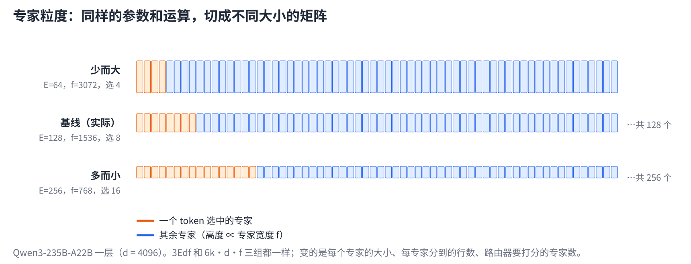
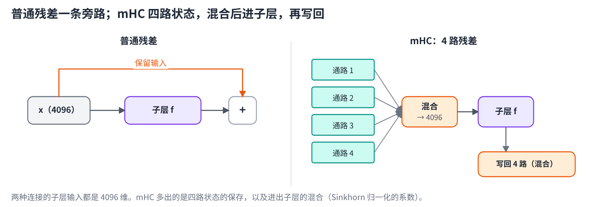
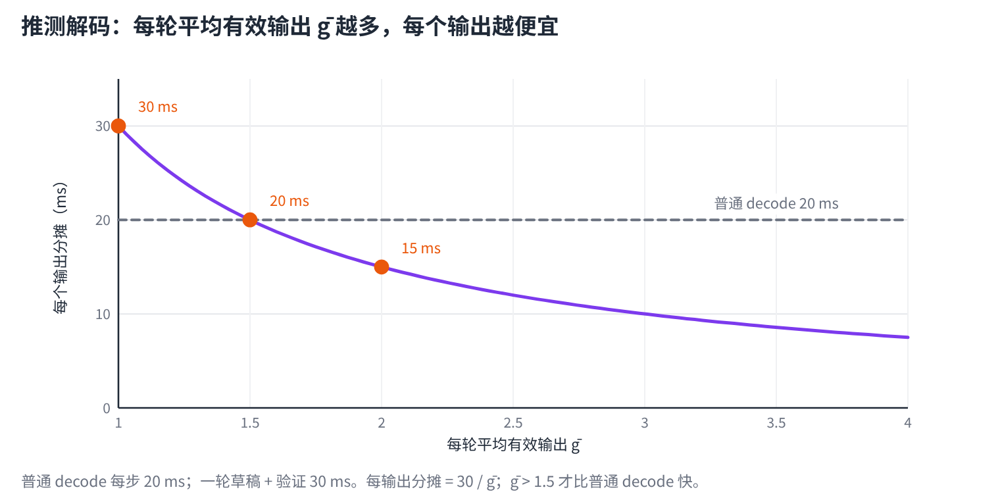
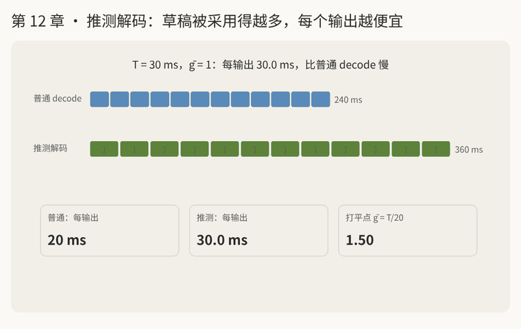

第 12 章 · 网络形状：深宽、专家粒度、残差与多 token 预测
本地运行
git clone https://github.com/wikieden/ai-infra-from-constraints
cd ai-infra-from-constraints/code/notebooks
pip install jupyterlab torch numpy
jupyter lab ch12_network_shape.ipynb也可以下载后直接用 VS Code 打开 .ipynb 运行。需要 GPU 的章节在 Colab 里选「代码执行程序 → 更改运行时类型 → GPU」。
本章回答：参数量相同的两个模型，计算图为什么还能很不一样？专家"少而大"和"多而小"差在哪？残差连接的方式为什么会影响要同时保存多少张量？多 token 预测和推测解码什么时候能省时间？
讲解日期：2026-11-24 · 上一章：第 11 章 MoE · 下一章：第 13 章 整个模型的资源需求与比较
对应原文：materials/ai-infra-book/manuscripts/02-模型架构.md§2.5 L587–L636（图 2-24）
本章缩写：AttnRes = Attention Residuals（注意力 / 残差连接）· FFN = Feed-Forward Network（前馈 / 网络）· KV = Key-Value（键 / 值）· mHC = Manifold-Constrained Hyper-Connections（流形约束 / 超连接）· MoE = Mixture of Experts（混合 / 专家）· MTP = Multi-Token Prediction（多 / token / 预测）。全部缩写见 缩写与术语表
前几章改的是"有哪些数据"：KV 多大、专家多少。本章改的是"怎么组织计算"：矩阵多大、多少层串起来、层和层之间怎么连、一次前向出几个 token。
讲解
第一步：深度与宽度：参数相近，依赖链差 4 倍（2026-11-24）
类比：盖同样面积的房子。 可以盖一栋矮而宽的平房，也可以盖一栋窄而高的楼。面积一样，但楼越高，上下楼要走的层数越多。
原文 L593：忽略词表，FFN 宽度和隐藏维度成固定比例时，稠密主干的参数量大致正比于 \(L d^2\)。
例子（编的比例）：
| 设计 | 层数 \(L\) | 隐藏维度 \(d\) | \(Ld^2\)（相对） | 依赖链（层数） | 每层矩阵 |
|---|---|---|---|---|---|
| 基线 | \(L\) | \(d\) | 1 | \(L\) | 大 |
| 窄而深 | \(4L\) | \(d/2\) | \(4 \times 1/4 = 1\) | \(4L\) | 小（每个约 1/4） |
参数量相近，但窄而深的模型要串 4 倍的层，每层还要保存自己的上下文状态（KV 是 \(2Ln_{\mathrm{KV}}d_h b\)，层数翻倍就多一倍）。
一句话：同样的参数预算，层数和宽度改变的是矩阵大小和串行深度。
第二步：专家粒度：少而大，还是多而小（2026-11-24）
类比：同样的人力，组 64 个 2 人小组，还是 128 个 1 人小组。 总工时不变，但任务被切得越碎，每个小组手里的活越少。
公式（原文 L595）：单层路由专家总参数和单 token 专家运算：
\(E\) 减半、\(f\) 加倍、\(k_{\mathrm{top}}\) 减半，两个量都不变。
例子（原文 L595–L597）：Qwen3-235B-A22B（94 层，\(d = 4096\)），16 个 token 的算例。
| 方案 | 专家数 \(E\) | 专家宽度 \(f\) | 每 token 选 | 每层专家参数 | 16 个 token 的专家运算（94 层） |
|---|---|---|---|---|---|
| 基线（实际） | 128 | 1536 | 8 | \(3 \times 128 \times 4096 \times 1536\) | ≈ 454 GFLOPs |
| 少而大 | 64 | 3072 | 4 | 同上 | ≈ 454 GFLOPs |
| 多而小 | 256 | 768 | 16 | 同上 | ≈ 454 GFLOPs |

图 12-1 · 三种粒度的专家参数和运算一样；变的是每个专家的矩阵大小、每个专家分到的行数，以及路由器要给多少个专家打分。
变的东西（原文 L595–L599）：每个专家收到的行数、分组矩阵乘法的形状、路由器参数（按专家数）、多卡分工的最小单位（128 个专家可以分 8 组每组 16 个；4 个 KV 头按完整头分只能分 4 份）。
一句话：专家粒度在 \(3Edf\) 和 \(6k_{\mathrm{top}}df\) 不变的前提下，改变矩阵形状、每专家行数和能切几份。
第三步：残差连接决定哪些张量要同时留着（2026-11-24）
类比：做菜时的备用料。 普通做法是：这道工序的原料先留一份，加工完再和成品拌在一起。如果后面好几道工序都要用这份原料，就得一直留到最后一道用完。
普通残差（原文 L603）：
子层计算期间要留着输入 \(x_\ell\)，等 \(f_\ell\) 算完才能相加。
mHC：一条残差通路变成四条（原文 L605–L609）：DeepSeek V4-Flash 保存 4 路残差状态，每路都是当前 token 的一份 4096 维表示。每个子层先把四路混合成一个 4096 维输入，算完再写回各通路。混合矩阵要满足"元素非负、各行各列和接近 1"，用 Sinkhorn 迭代做到：交替把每行、每列除以各自的和。
例子（编的 2×2 矩阵，Sinkhorn 两轮）：
| 步 | 矩阵 | 行和 / 列和 |
|---|---|---|
| 开始 | \(\begin{bmatrix}1 & 3\\ 1 & 1\end{bmatrix}\) | 行 4、2；列 2、4 |
| 行归一 | \(\begin{bmatrix}0.25 & 0.75\\ 0.5 & 0.5\end{bmatrix}\) | 行 1、1；列 0.75、1.25 |
| 列归一 | \(\begin{bmatrix}0.333 & 0.6\\ 0.667 & 0.4\end{bmatrix}\) | 行 0.933、1.067；列 1、1 |
再迭代几轮，行和、列和都趋近 1。
代价（原文 L609）：处理 8192 个输入 token 时，mHC 的混合投影约 555 GFLOPs，非矩阵运算约 149 GFLOPs；还要多存四路表示。
AttnRes（原文 L611–L613）：Kimi K3 让当前层用注意力的方式在深度方向上挑选之前各层的表示（序列注意力在 token 之间挑）。块式实现把若干层组成一块，保留块表示给后面的块选。这些块表示只在一次前向里保存，前向结束就释放；KV 则要跨多次调用保存。

图 12-2 · 两种连接的子层输入都是 4096 维；mHC 多出的是四路状态的保存，以及进出子层的混合与归一化。
一句话：连接方式决定哪些表示要同时留着、留多久；多路残差和深度注意力都多了临时存储和混合计算。
第四步：多 token 预测与推测解码：一轮出几个，划不划算（2026-11-24）
类比：写作文时让助手先拟几句草稿，你再逐句审。 草稿拟得快、你审得快，而且大部分都能用，就比你自己一个字一个字写快；草稿老是被否掉，反而更慢。
原文 L621–L623：MTP 在主干末端加预测后续几个 token 的辅助模块。训练时让表示包含更远的信息；推理时辅助模块先提出几个候选 token，主模型一次验证。推测解码就是"先便宜地生成草稿，再让目标模型验证"。
例子（原文 L625）：DeepSeek V4-Flash 的 MTP 辅助块，单个 token 一次辅助计算约 1.80 GFLOPs，其中共享词表头就占约 1.06 GFLOPs：不加独立权重，但每次调用都要做词表投影。
公式（原文 L629–L633）：普通 decode 一步 \(T_d\)；一轮推测解码草稿 \(T_s\) + 验证 \(T_v\)，平均得到 \(\bar g\) 个有效输出：
例子（原文 L635）：\(T_d = 20\) ms，\(T_s + T_v = 30\) ms。
| 每轮平均有效输出 \(\bar g\) | 每输出分摊 | 和普通 decode 比 |
|---|---|---|
| 2 | 15 ms | 快 |
| 1.5 | 20 ms | 打平 |
| 1 | 30 ms | 慢 |

图 12-3 · 横轴是每轮平均有效输出 \(\bar g\)，纵轴是每个输出分摊的时间。灰线是普通 decode 的 20 ms；交点 \(\bar g = 1.5\) 是打平点。
原书第 8 章 §8.5 详细算草稿长度和验证开销。
一句话：MTP / 推测解码用一轮多一些计算换更少的串行轮数；每轮通过验证的 token 数要大于 \((T_s + T_v)/T_d\) 才划算。
动画演示：推测解码：草稿被采用得越多，每个输出越便宜

可交互版：animations/12-network-shape.html（两个滑块：一轮草稿 + 验证的时间（相对普通 decode），每轮平均有效输出 \(\bar g\)）。
怎么看：
- 上排是普通 decode：一步出一个 token，每步 20 ms（第四步）；
- 下排是推测解码：每轮先出几个草稿（灰），验证后通过的变绿，没通过的作废；
- 两条时间轴并排走，看谁先生成完 12 个 token；
- 播放时 \(\bar g\) 从 1 涨到 3：推测解码从更慢变成更快，交点在 \(\bar g = (T_s + T_v)/T_d\)。
练习与作答记录
题 1（第一步）：基线模型 \(L = 32\)、\(d = 4096\)。想保持 \(Ld^2\) 不变、把层数改成 8 层，隐藏维度要多大？每层的 KV 头数和头宽不变时，KV 缓存变成原来的几分之几？
作答记录：（待作答）
题 2（第二步）：一层 MoE，\(d = 2048\)，基线 \(E = 64\)、\(f = 1024\)、\(k_{\mathrm{top}} = 4\)。写出另一组 \((E, f, k_{\mathrm{top}})\)，让每层专家参数和每 token 专家运算都不变，但每个专家的矩阵变成原来的一半大。这时 batch 里每个专家平均分到的行数怎么变？
作答记录：（待作答）
题 3（第四步）：普通 decode 一步 25 ms，推测解码一轮草稿 + 验证共 40 ms。每轮平均要通过多少个 token 才划算？如果每轮平均通过 1.8 个，每输出分摊多少？
作答记录：（待作答）
口诀
平房和高楼，面积一样楼层不同；
专家切大切小，总量不变形状变；
残差留原料，几路就留几份；
草稿审得过，才比一字一字写得快。
本章复习卡片
I41（深宽与专家粒度的不变量）、I42（残差、mHC 与 AttnRes 的保存时间）、I43（推测解码的划算条件）。练习做完后，按答错、卡住的地方再补。
附录 · 延伸阅读
留给以后深入学习用，不影响本章主线。★ 是建议先读的。
推荐阅读
| 读什么 | 读哪里 | 读它为了什么 |
|---|---|---|
| ★ AII 第 2 章 | §2.5 L587–L636 | 本章原文，图 2-24 |
AII 计算结果 calculations/results/qwen235-granularity-baseline.md |
全文（原文 L597 链接） | 三种专家粒度的路由与专家矩阵分项 |
| Zhu 等, Hyper-Connections（2024）与 DeepSeek V4 技术报告 | mHC 一节 | 多路残差与流形约束 |
| Leviathan 等, Fast Inference from Transformers via Speculative Decoding（2023） | 第 3 节 | 推测解码的正确性与期望加速 |
| DeepSeek-V3 技术报告 | MTP 一节 | MTP 训练目标与推理时的用法 |
| AII 第 8 章 §8.5 | 推测解码 | 草稿长度、验证开销与并发竞争 |
数学原理
- 参数随形状缩放：稠密 Transformer 每层主要参数约 \(12d^2\)（FFN 取 \(4d\) 时），所以总参数约正比于 \(Ld^2\)。
- 乘积不变：\(E \cdot f\) 和 \(k \cdot f\) 同时不变，只需 \(E\)、\(k\) 同比例缩小、\(f\) 反比例放大。
- Sinkhorn 迭代：交替做行归一和列归一，正矩阵会收敛到行和、列和都为 1 的双随机矩阵。
公式清单
| 公式 | 意思 |
|---|---|
| 稠密参数 \(\propto L d^2\) | 深宽取舍 |
| 专家参数 \(= 3Edf\)，专家运算 \(= 6k_{\mathrm{top}}df\) | 粒度不变量 |
| \(x_{\ell+1} = x_\ell + f_\ell(x_\ell)\) | 普通残差 |
| 每输出分摊 \(= (T_s + T_v)/\bar g\) | 推测解码 |
| 划算：\(\bar g > (T_s + T_v)/T_d\) | 打平点 |
代码对照：把本章的数字用代码算一遍
纯 Python，不需要 GPU。代码在仓库本地
ai-infra/solutions/chapter-code/ch12_network_shape.py，配套测试tests/test_ch12.py：
bash cd ai-infra/solutions/chapter-code uv run python ch12_network_shape.py # 一步一步打印 uv run pytest tests/test_ch12.py
讲义 ↔ 代码：
| 讲义 | 公式 | 写法 | 跑出来 |
|---|---|---|---|
| 第一步 深宽 | \(Ld^2\) | dense_scale(4, 0.5) |
1.0（参数相近，层数 ×4） |
| 第二步 三种粒度 | \(3Edf\)、\(6kdf\) | expert_totals(128, 1536, 8) 等 |
参数、运算三组相同；16 token × 94 层 ≈ 454 GFLOPs |
| 第三步 Sinkhorn | 行归一、列归一 | sinkhorn([[1, 3], [1, 1]], 1) |
和表里一致；迭代 50 轮行列和都≈1 |
| 第四步 推测解码 | \((T_s + T_v)/\bar g\) | spec_per_output(30, g) |
15、20、30 ms；打平点 1.5 |
关键几行：
def sinkhorn(m, rounds):
for _ in range(rounds):
m = [[v / sum(r) for v in r] for r in m] # 每行除以行和
cols = [sum(r[j] for r in m) for j in range(len(m[0]))]
m = [[r[j] / cols[j] for j in range(len(r))] for r in m] # 每列除以列和
return m
代码里才看得到的 3 件事：
- 一轮 Sinkhorn 后列和精确为 1，但行和又被打乱了（0.933、1.067）；要多轮才同时接近 1。
expert_totals只算路由专家，不含路由器和共享专家；原文说路由器参数随专家数变，所以三种粒度的整层参数并不完全相同。spec_per_output里 \(\bar g\) 是平均值；一轮至少出 1 个有效 token（验证时主模型自己的预测总能用）。
自己改一改（不影响练习答案）：
- 把
sinkhorn的轮数改成 1、3、10、50，打印行和与列和，看收敛速度。 - 换一个 4×4 的正矩阵试 Sinkhorn。
- 用
spec_per_output画出 \(\bar g\) 从 1 到 4 的分摊时间曲线。